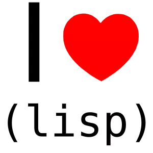

A pandemia de COVID-19 chegou e, com ela, apareceu também o distanciamento social. Ainda que não seja algo legal, isso nos deu a oportunidade de reavaliar algumas atitudes nas nossas vidas, e também de, quem sabe, revisitar projetos antigos que, no meu caso, eu sempre deixava de lado e nunca terminava.
Um desses projetos que eu queria desenvolver é a implementação de um interpretador de um dialeto de Lisp. Lisps são linguagens não-convencionais, no sentido de não estarem próximas do que normalmente aprendemos em cursos ou faculdade, que são linguagens com sintaxe similar a C.
Essa decisão culminou na confecção de uma linguagem, que ainda estou finalizando, chamada Majestic Lisp. Ela veio como uma resposta a outro interpretador, que eu estava fazendo em C, para outro dialeto de Lisp, que Paul Graham inventou, chamado Bel. Trouxe também uma coisa ou outra de outros dialetos como Scheme, Common Lisp e Clojure, e também alguns conceitos de linguagens como APL.
A seguir, vou descrever alguns pontos básicos da linguagem. Se você for completamente leigo em Lisp ou programação funcional, não se preocupe, pois esse post foi feito pensando em você. Nada será explicado exaustivamente, mas espero que sirva para aguçar o paladar.
O que é Lisp, afinal de contas?
Se você caiu de paraquedas nesse post, talvez não saiba o que é um dialeto de Lisp. Vou dar uma explicação resumida: Lisps são Processadores de Listas, ou seja, linguagens que operam através de percorrer listas encadeadas, interpretando-as.
Essa característica é muito importante porque nos faz pensar que dados são código, isto é, nossos programas são escritos através das mesmas estruturas de dados que manipulam.
Isso significa que podemos fazer com que nossos programas produzam facilmente dados que sejam programas válidos. O nome disso é homoiconicidade, uma característica de algumas linguagens, sobretudo dos Lisps.
Lisps são linguagens com notação prefixa (os operadores vêm antes dos operandos), e geralmente têm uma sintaxe com muitos parênteses, ou seja, baseada em s-expressions. Essa sintaxe não é essencial para a homoiconicidade, mas caiu no gosto dos usuários de LISP 1.5 (o primeiro dialeto de Lisp), quando John McCarthy a inventou, por volta de 1960.
Por que fazer uma linguagem?
Fazer a sua própria linguagem de programação é um processo muito interessante porque te induz a trabalhar com um projeto grande. Portanto, é uma forma muito boa de estudar programação.
Tomei para mim alguns princípios básicos durante o desenvolvimento, que me ajudaram a nortear o que pretendo fazer e também como administrar o desenvolvimento de Majestic Lisp:
- Performance não é um objetivo central. Claro, é legal que o interpretador funcione rápido, mas para uma primeira implementação, isso não é extremamente essencial;
- A própria implementação deveria ser didática de alguma forma. Assim, optei pelo uso de literate programming, ou seja, escrevi um texto didático em forma de livro, que contém blocos de código que podem depois serem compilados;
- Deve ser algo simples, no sentido de que o dialeto em si não traz nenhuma surpresa, especialmente para quem já está acostumado com Lisps como Scheme, Common Lisp e Clojure;
- Deve mostrar que fazer sua própria linguagem não é algo intangível! Muitos novos desenvolvedores aproximam-se de áreas de interesse que nada têm a ver com isso, vêem esse tipo de atividade e acham extremamente "difícil". Já vi muitos desenvolvedores que se dão por vencidos antes mesmo de tentarem. Então quero mostrar que não é algo impossível de se fazer e, dependendo do projeto, não é algo difícil – talvez apenas complicado, pelo tamanho do projeto;
- A linguagem deve poder ser usada algebricamente, ou seja, eu quero poder usar a linguagem também como uma notação em uma apresentação, por exemplo. Minha maior inspiração nesse quesito é o Ken Iverson, criador da linguagem APL, que surgiu de uma notação que ele usava em sala, nas aulas que dava na faculdade.
Sem mais delongas, vamos descrever a linguagem!
REPL
Antes de mais nada, a notação para exemplos que utilizarei aqui é uma notação que simula um REPL. Sem entrar muito em detalhes, a ideia é ter um console interativo onde digita-se uma expressão válida e recebe-se um resultado.
A expressão digitada será sempre prefixada pelo símbolo >, e a
resposta virá sem recuo, logo abaixo da entrada.
> entrada do usuário resposta do interpretador
Algumas entradas também poderão usar múltiplas linhas. Nesse caso,
elas terão recuo para conservarem a indentação da linha prefixada com
>.
> entrada do usuário com múltiplas linhas resposta do interpretador
Tipos básicos
Majestic Lisp é uma linguagem que começa pelos seus tipos mais básicos de dados, tanto na sua construção quanto na sua descrição.
Majestic Lisp tem cinco tipos básicos: símbolos, números, caracteres, cons e streams. Os streams envolvem leitura e escrita em linha de comando e em arquivos no sistema, e sua especificação ainda não está totalmente finalizada, então não vou dizer muito sobre eles.
Símbolos
Símbolos são como palavras na linguagem, e podem ser utilizados tanto como valores quanto para nomear as coisas, algo que veremos logo mais.
Para usarmos símbolos como valores, precisamos quotá-los. Isso pode ser feito com um apóstrofo antes do símbolo:
> 'foo foo > 'bar bar > 'lucas lucas
A ideia do quote é informar ao interpretador para que não interprete o valor quotado; em vez disso, ele usa-o da forma como foi escrito.
Alguns símbolos especiais são axiomas da linguagem, e não precisam ser quotados, pois eles são interpretados como eles mesmos:
> t t > nil nil
t e nil são especiais porque indicam verdadeiro e falso
respectivamente e, no caso de nil, há também mais um uso que
exploraremos a seguir.
Números
Números funcionam sintaticamente como símbolos, mas são um tipo à parte dos mesmos por conveniência. Podemos representar facilmente números inteiros:
> -1 -1 > 23 23
Podemos também representar frações e pontos flutuantes com facilidade. Frações são números racionais sempre exatos, e por isso, só se admite números inteiros no numerador e no denominador, inclusive efetuando simplificação quando necessário.
Os pontos flutuantes admitem omitir o zero à esquerda da vírgula ou o zero à direita da vírgula, quando as partes inteiras e fracionárias são nulas, respectivamente.
> 4/6 2/3 > .125 0.125 > 2. 2.0
Os números complexos são implementados de forma diferente. Eles possuem uma parte real e uma parte imaginária. Assim, eles usam os outros subtipos de números para representarem essas partes à medida que for necessário:
> 2J5 2J5 > -3J6/4 -3J3/2 > 0J1 0J1
Os números complexos de Majestic Lisp tomam emprestada a notação de
APL, que separa as partes do número com um J. No exemplo acima,
representamos os números \(2+5i\), \(-3+\frac{6}{4}i\) e \(0+1i\) (ou seja, \(i\)).
Caracteres
Caracteres também funcionam mais ou menos como símbolos, sendo valores que são interpretados para si mesmos. Quando sozinhos, são interpretados com jogo da velha e uma barra invertida como prefixos:
> #\a #\a > #\C #\C
Alguns caracteres especiais podem ser representados com nomes mais literais, por exemplo, o caractere de campainha:
> #\bel #\bel
Cons
O cons é um par de valores, o que significa que ele é um tipo e também uma forma de combinar valores na linguagem.
Cons podem ser criados através do uso da função cons; veremos mais
sobre funções adiante.
> (cons 'a 'b) (a . b)
Podemos também usar a ideia de quoting para construir um cons diretamente:
> '(a . b) (a . b)
Um cons separa sintaticamente seus elementos com um ponto. Chamamos a parte da esquerda de car (lê-se cár) ou first, e a da direita de cdr (lê-se coul-der) ou rest. Para facilitar, vou me referir a elas como first e rest, por razões que veremos a seguir.
Listas pontuadas
Existem algumas situações particulares quando o rest de um cons for também um cons, independente de o first ser. Observe o exemplo:
> '(a . (b . c)) (a b . c)
Quando o rest de um cons for também um cons, podemos remover o ponto que separa ambos os elementos, e também os parênteses do cons que está no rest do primeiro.
Ou seja, no exemplo anterior, remove-se o ponto após a, e os
parênteses ao redor de (b . c). Essa notação é chamada de lista
pontuada.
Listas adequadas
> '(a . (b . (c . nil))) (a b c)
No exemplo acima, uma possível resposta seria (a b c . nil), de acordo
com a regra da lista pontuada. Porém, quando a representação envolve
o símbolo nil ao final da lista pontuada, separado por um ponto,
pode-se omitir tanto o ponto como o nil.
Um encadeamento de cons com essas características é chamado de lista adequada, ou simplesmente lista.
Podemos criar listas também através do processo direto de quoting:
> '(1 2 3 4) (1 2 3 4)
Lista vazia
O símbolo nil representa a ideia de falso na linguagem e também é um
terminador para listas, mas também representa uma lista vazia. Isso
pode ser observado quando tentamos interpretar uma lista vazia
quotada:
> '() nil
Listas como programas
As listas são a parte mais importante de um Lisp e, consequentemente,
de Majestic Lisp. Nossos programas usam as notações de listas para que
façamos operações. Esse foi o caso quando usamos a função cons.
Veremos agora alguns exemplos do que ocorre quando damos listas ao interpretador, para que ele as processe diretamente.
Definindo variáveis
Para definirmos variáveis, dando valores a elas, utilizamos uma lista também:
> (def x 5) x
No exemplo anterior, damos ao interpretador uma lista com três
elementos: o símbolo def, o símbolo x e o número 5, nessa ordem.
Como a lista não está quotada, o interpretador tentará processá-la, e
retornará algum resultado. def é conhecido como sendo uma forma
especial; o que ela faz é criar uma relação entre o símbolo x e o
valor 5, em uma tabela global que normalmente não é acessada
diretamente pelo programador.
Assim, se dermos ao interpretador o símbolo x…
> x 5
…ele nos retornará o valor associado ao mesmo – nesse caso, o
número 5.
Funções
Majestic Lisp já se inicia com uma certa quantidade de funções primitivas que fazem bastantes coisas. Por exemplo, considere as somas a seguir:
> (+ 2 3) 5 > (+ 5 7 1) 13
+ é uma função primitiva que, quando aplicada a dois ou mais valores,
soma-os, produzindo um resultado numérico. Veja que aqui fica bem
claro o uso da notação prefixa, ou seja, o + aparece antes dos números
aos quais é aplicado.
A notação prefixa é vantajosa por três motivos: primeiro, deixa
explícito o uso de + enquanto função. Segundo, remove a ambiguidade da
notação infixa, usada na matemática, e portanto não precisamos falar
em precedência nas operações. Terceiro, reduz a repetição dos
operadores – como o próprio +.
Quando as funções primitivas não são suficientes na linguagem, podemos definir nossas próprias funções. Por exemplo, podemos definir uma função que eleva um número ao quadrado, multiplicando-o por ele mesmo:
> (fn (x) (* x x))
#<function (fn (x)) {...}>
Veja que o interpretador processa a expressão e nos devolve uma função, que aqui, é um valor.
Isso é um conceito diferente das linguagens como C: aqui, nossas funções são valores em si! E dessa forma, elas também podem ser atribuídas a símbolos, como se definíssemos variáveis quaisquer:
> (def quadrado (fn (x) (* x x)))
quadrado
> quadrado
#<function (fn (x)) {...}>
Um atalho para esse tipo de definição de função é usar o macro
defn.
> (defn quadrado (x)
(* x x))
quadrado
Macros são como funções executadas em expressões antes de serem
interpretadas, como se operassem sobre expressões quotadas. Assim, uma
expressão iniciada por defn expande-se para a anterior. Isso pode ser
visto através da função primitiva macroexpand-1:
> (macroexpand-1 '(defn quadrado (x)
(* x x)))
(def quadrado (fn (x) (* x x)))
Finalmente, podemos usar a função em valores, como fizemos
anteriormente com cons e +.
> (quadrado 5) 25
Conclusão
Isso encerra a apresentação preliminar de Lisp e também de Majestic Lisp. A linguagem possui muitas outras características, é claro. Uma lista não-exaustiva (e sem muitas explicações!) inclui:
- Funções do usuário com aplicação parcial;
- Condicionais;
- Escopo léxico em funções;
- Objetos de macros;
- Definição de macros;
- Desestruturação ad-hoc dos parâmetros de funções e de macros;
- Quasiquoting, ou seja, escrita de listas com substituições de elementos ad-hoc;
- Macros do leitor de expressões durante o parsing…
Muitas dessas características já aparecem em outros dialetos de Lisp (talvez com exceção da primeira), mas Majestic Lisp não tem a pretensão de substituí-los ou de ser um novo padrão de indústria. Como disse anteriormente, o objetivo é primariamente didático, seja para mim, seja para quem for usar ou saber como foi implementado.
Atualmente estou trabalhando no penúltimo elemento dessa lista, enquanto o último depende indiretamente da estabilização dos streams, anteriormente citados.
Até então, a linguagem está rumando para algo que um programador Lisp experiente não vê como surpresa, e isso é bom, porque a linguagem não deve surpreender sintaticamente.
Voltarei a escrever sobre Majestic Lisp para falar sobre novidades na linguagem, no futuro.